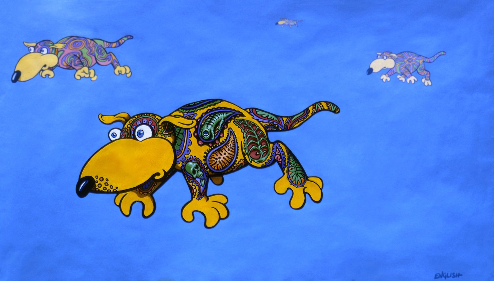

Psychedelic Dogs from Due North of Nowhere
Home
1960s–1970s
1980s
1990s
2000s
2010s
2020s
← Return to 1986

Title:
Psychedelic Dogs from Due North of Nowhere
Date:
1986
Medium:
Acrylic on paper
Dimensions:
36 × 49 inches
Work ID:
RE-000035
Signature:
Signed “ENGLISH,” lower right.
← Previous: Looking Up
Next: Wings of Destiny →